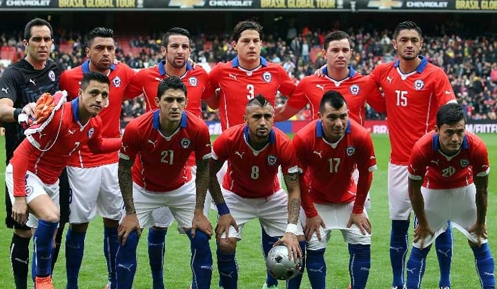
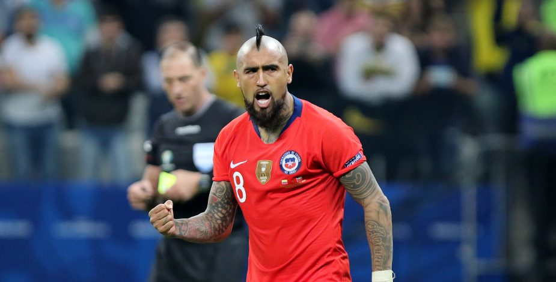

Mejores Jugadores

"No es un top de mejor a peor, nos basamos en hechos en base a sus caracteristicas y hechos"
1-. Chupete Soazo
¿Porque razones?
Para empezar chupete soazo a sido a su carrera de 16 años en el ambito futbolistico de los mayores goleadores de mexico en su antiguo plantel del monterrey con lo que logro: 3x Campeón de la CONCACAF Champions, 2X MEXIKANISCHER MEISTER y 4X MEJOR MARCADOR dejando un legado inolvidable en mexico.
Y en la seleccion chilena humberto soazo completó 60 partidos y anotó 21 goles, siendo el 9° máximo anotador en la historia del seleccionado.
2-. Alexis Sanchez
¿Porque razones?
Que hablar de el que no se haya dicho sobre este jugadorazo, con un suelo de 18.2 millones GBP (2020) se lo tiene merecido por toda su carrera llena de logros, con altos y bajos, pero sin duda sus momentos altos son memorables como haber ganado la liga de españa con el barcelona tambien numerosas copas como la copa del rey, la supercopa, copa FA tambien las preciadas copas america 2015 y copa america centenario.
Al igual tuvo un logro mucho mas implacable, que es ser el maximo goleador de la seleccion chilena que deja al descubierto al ser el mayor anotador de goles de la historia de chile hasta ahora.
3-. Arturo Vidal

¿Porque razones?
Arturo vidal, el rey muchos lo consideran el mejor jugador de chile ya sea por su garra o por puro sentimiento que entrega al jugar pero sin duda por cada equipo que pasa deja una marca ya sea en los titulos o en la hermandad que genera en los jugadores debido a esto es un jugador de gran valor con un salario 7.8 millones de euros ya sea por los +20 titulos obtenidos en toda su carrera ya que su rastro siempre lo deja como equipos de gran renombre como colo-colo, barcelona, juventus, bayern munich, Bayer 04 Leverkusen y finalmente la seleccion chilena.
Una de sus mayores fortalezas es su caracter el control de juego como medio campista e ir indudablemente al balon, se tiene merecido estar aqui ademas de tener el incondicional cariño de la multitud.